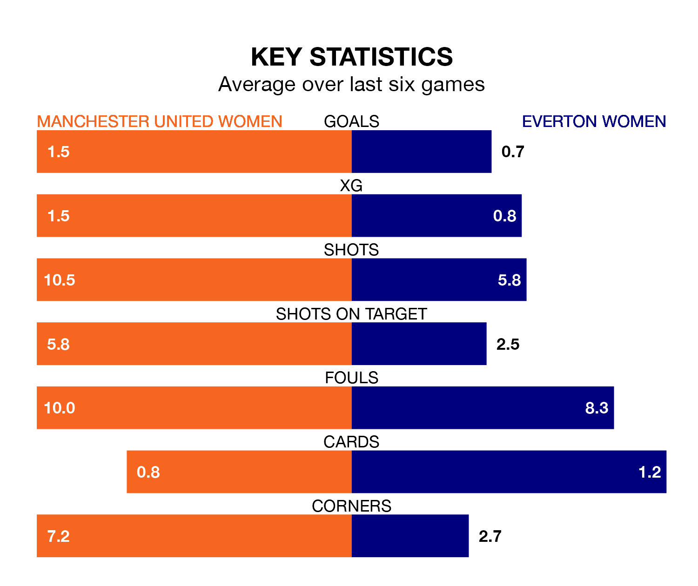

Manchester United Women are heavy favourites to keep all three points at home in Sunday lunchtime's kick-off against Everton Women.
The Red Devils, who sit fifth in the FA Women's Super League with 17 games played, are priced at 1.2 to seal victory at the Leigh Sports Village Stadium.
Sitting five places and 13 points behind them in the table, Everton are 9.0 to win with *Betting Company*, while the draw is at 6.5.
With 14 goals in 17 games so far this season, Everton are the league's lowest scorers with 0.8 goals per game. And they are conceding at an average rate, letting in 29 goals at a rate of 1.7 per game.
Manchester United, meanwhile, are above average scorers, with 2.1 goals per game, compared to a league average of 1.7. They have conceded 1.3 goals per game.
In Mary Earps, the Red Devils can rely on one of the league's safest pair of hands. She has kept six clean sheets in her 17 appearances this season, and only one other 'keeper – Manchester City Women's Khiara Keating – has been able to prevent the opposition scoring on more occasions in the FA Women's Super League.
In the Toffees's net, Courtney Brosnan has four clean sheets in 15 games. She has conceded a goal every 56 minutes, 30% more often than the 73 minutes between goals for Earps.
In the last 10 years, Manchester United and Everton have played each other on 15 occasions. Manchester United won 12 of them, Everton one, and they drew twice.
On average, the Red Devils scored 2.7 goals and the Toffees 0.5 in those matches.
Their last meeting was on November 9, when Manchester United won 7-0 at home.
The home team are in mixed form in the FA Women's Super League, with three wins and a draw from their last six games.
With a win and a draw over that period, the visitors' form is much worse – they have taken four points from 18, compared to Manchester United's 10.
Manchester United's last match was on March 23, a 3-1 loss against Manchester City Women, with Kerstin Casparij getting the goal for the Red Devils.
Everton drew 0-0 with Liverpool Women last time out, on Sunday.
Updated: 10:31 (UTC), 31/03/24